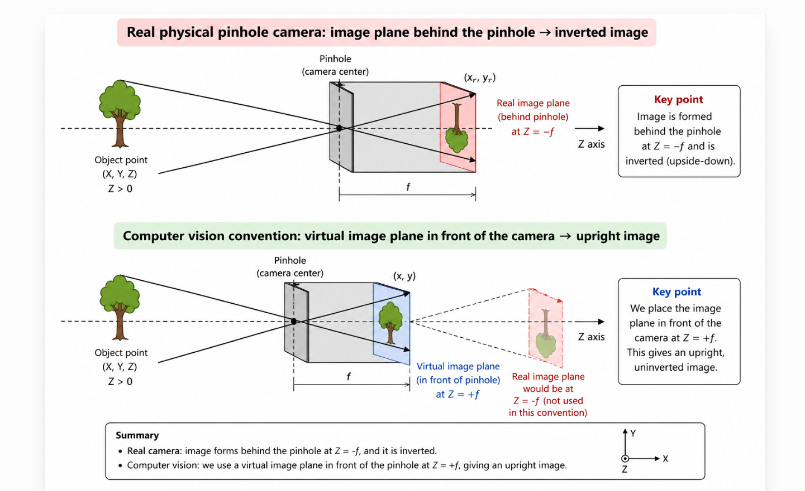
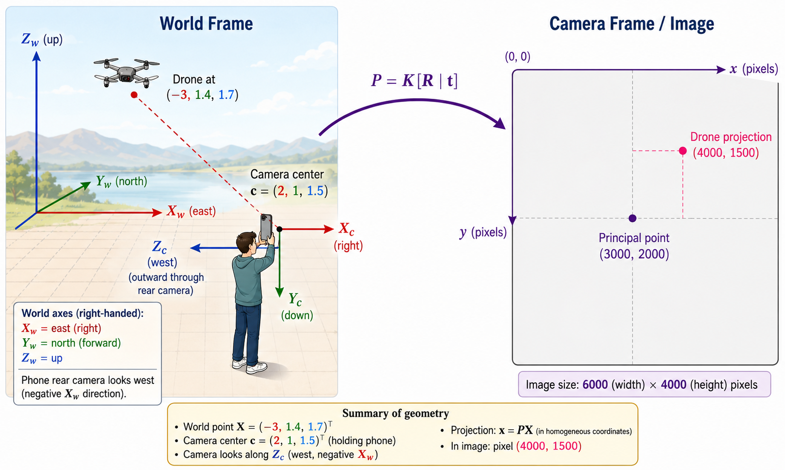
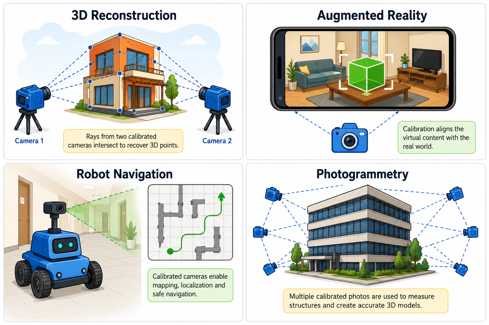
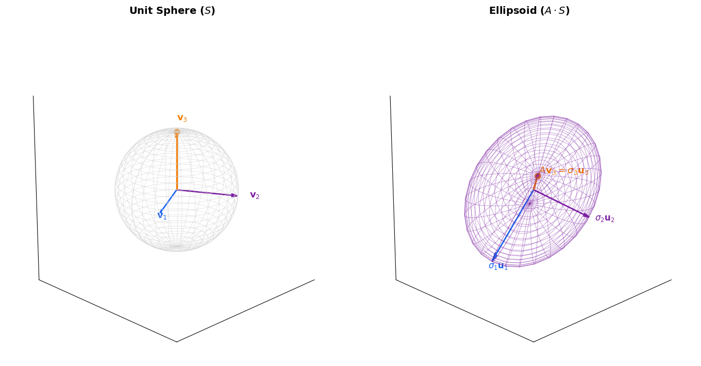

3D Computer Vision from First Principles — Part 3
The Camera Matrix \(P = K[R \mid \mathbf{t}]\)
Introduction
In Part 1, we built \(\mathbb{P}^2\) from row reduction — homogeneous coordinates, equivalence classes, points at infinity. In Part 2, we went further: projective duality, conics, tangent lines, the dual conic. All of it abstract, all of it in \(\mathbb{R}^2\) and \(\mathbb{P}^2\).
Enough abstraction. It is time to step into the real world.
Cameras and real scenes live in three dimensions. A tree, a building, a face — these are 3D objects in \(\mathbb{R}^3\). A camera takes this 3D world and collapses it onto a 2D sensor. The mathematical object that does this collapsing is the camera matrix \(P\) — a \(3 \times 4\) matrix that maps \(\mathbb{R}^4\) to \(\mathbb{R}^3\).
We promised this object at the end of Part 1. Here it is.
We will build it stage by stage — from similar triangles to the full \(P = K[R \mid \mathbf{t}]\) — deriving every piece from physical first principles. No formulas handed down from above. At the end of the post, the camera matrix will be a simple composition of a few simple matrices, each with a clear geometric meaning. Moreover, it will cease to be a mysterious black box and instead become a tool that almost anyone can understand and use.
The Camera Matrix
The Ideal Pinhole Camera
Before lenses, sensors, and pixels, there is a simpler question: how does light from a 3D scene form a 2D image?
The oldest answer is the pinhole camera. Punch a small hole in one wall of a dark box. Light from each point in the scene passes through the hole and lands on the opposite wall. The result is an image — inverted, but sharp. No lens required.
The pinhole camera is not just a historical curiosity. It is the mathematical model that underlies every camera matrix derivation in computer vision. Real cameras have lenses, distortion, and finite apertures, but the pinhole model captures the essential geometry: every scene point maps to exactly one image point, via a straight ray through the camera center.
Setup. Place the camera center at the origin \(O = (0, 0, 0)^\top\). The camera points along the positive \(Z\) axis. The image plane sits perpendicular to \(Z\) at distance \(f\) in front of the camera center. This distance \(f\) is the focal length. If you remember your high school physics, \(f\) is the distance at which parallel rays converge to a point. In our case, it is the distance from the camera center to the image plane.

A scene point \(\mathbf{X} = (X, Y, Z)^\top \in \mathbb{R}^3\) with \(Z > 0\) maps to an image point \((x, y)^\top\) via similar triangles:
\[\boxed{x = \frac{fX}{Z}, \qquad y = \frac{fY}{Z}}\]
This is the camera projection formula. Everything that follows is a derivation of this formula from first principles, and a generalization to the full camera matrix
From Ratios to Matrices
We know from Part 1 that the map \((X, Y, Z)^\top \mapsto (fX/Z, fY/Z)^\top\) is not linear — division by \(Z\) rules that out. But we do not want to give up linearity. Matrices can be inverted, decomposed, estimated from data, and composed. Can we salvage something? Anything?
Yes. The trick is to separate the two steps. The map:
\[T : \mathbb{R}^3 \to \mathbb{R}^3, \qquad T\begin{pmatrix} X \\ Y \\ Z \end{pmatrix} = \begin{pmatrix} fX \\ fY \\ Z \end{pmatrix}\]
is linear. Check: for any \(\mathbf{u}, \mathbf{v} \in \mathbb{R}^3\) and scalar \(\alpha\):
\[T(\mathbf{u} + \mathbf{v}) = T\begin{pmatrix} u_1 + v_1 \\ u_2 + v_2 \\ u_3 + v_3 \end{pmatrix} = \begin{pmatrix} f(u_1 + v_1) \\ f(u_2 + v_2) \\ u_3 + v_3 \end{pmatrix} = T(\mathbf{u}) + T(\mathbf{v}) \checkmark\]
\[T(\alpha\mathbf{v}) = \begin{pmatrix} f\alpha v_1 \\ f\alpha v_2 \\ \alpha v_3 \end{pmatrix} = \alpha T(\mathbf{v}) \checkmark\]
Now, how do we write \(T\) as a matrix? A linear map is completely determined by its action on the basis vectors. If \(\{\mathbf{e}_1, \mathbf{e}_2, \mathbf{e}_3\}\) is the standard basis of \(\mathbb{R}^3\), then the matrix of \(T\) has the image of each basis vector as its columns:
\[T(\mathbf{e}_1) = \begin{pmatrix} f \\ 0 \\ 0 \end{pmatrix}, \quad T(\mathbf{e}_2) = \begin{pmatrix} 0 \\ f \\ 0 \end{pmatrix}, \quad T(\mathbf{e}_3) = \begin{pmatrix} 0 \\ 0 \\ 1 \end{pmatrix}\]
Stack these as columns:
\[M_0 = \begin{pmatrix} f & 0 & 0 \\ 0 & f & 0 \\ 0 & 0 & 1 \end{pmatrix}\]
A linear map \(T : V \to W\) between finite-dimensional vector spaces is completely determined by its action on a basis. If \(\mathcal{B} = \{v_1, \ldots, v_n\}\) is a basis of \(V\) and \(\mathcal{C} = \{w_1, \ldots, w_m\}\) is a basis of \(W\), then the matrix \([T]_{\mathcal{B}}^{\mathcal{C}}\) is the \(m \times n\) matrix whose \(j\)-th column is the coordinate vector of \(T(v_j)\) in the basis \(\mathcal{C}\):
\[T(v_j) = \sum_{i=1}^m a_{ij} w_i \qquad \Longrightarrow \qquad [T(v_j)]_{\mathcal{C}} = \begin{pmatrix} a_{1j} \\ \vdots \\ a_{mj} \end{pmatrix}\]
We will use this fact repeatedly. Better to review it now than scratch our heads later.
So the ideal camera pipeline is:
\[\underbrace{\begin{pmatrix} X \\ Y \\ Z \end{pmatrix}}_{\mathbb{R}^3} \xrightarrow{M_0} \underbrace{\begin{pmatrix} fX \\ fY \\ Z \end{pmatrix}}_{\mathbb{R}^3} \xrightarrow{\phi} \underbrace{\begin{pmatrix} x \\ y \end{pmatrix}}_{\mathbb{R}^2}\]
The first step is linear. The second step — \(\phi\), dividing by the third coordinate — is the nonlinearity, deferred to the very end.
Note that only the last step — \(\phi\) — is nonlinear. And notice something else. For any \(\lambda \neq 0\):
\[\phi(\lambda fX, \lambda fY, \lambda Z) = \left(\frac{\lambda fX}{\lambda Z}, \frac{\lambda fY}{\lambda Z}\right) = \left(\frac{fX}{Z}, \frac{fY}{Z}\right) = \phi(fX, fY, Z)\]
The \(\lambda\) cancels. Remember this from somewhere? Yes — \(\mathbb{P}^2\). All that machinery — equivalence classes, the quotient set, the bijection \(\phi\) — was built exactly for this cancellation.
Do not worry, we have not given it up. \(\mathbb{P}^2\) will return with a vengeance later, when we discuss homographies and the image of the absolute conic. But today, all our action takes place in the real world \(\mathbb{R}^3\). No equivalence classes. No points at infinity. Just a few matrices, relative motions and reference frames, and a camera that maps 3D points to 2D points. Nothing more, nothing less.
Stage 1: The Intrinsic Matrix \(K\)
Sensor Coordinates and Pixel Coordinates
Let us be more careful about units. Rename the image coordinates from the similar triangles derivation as \(x_s\) and \(y_s\) — the subscript \(s\) stands for sensor:
\[x_s = \frac{fX}{Z}, \qquad y_s = \frac{fY}{Z}\]
The world coordinates \((X, Y, Z)\) and the sensor coordinates \((x_s, y_s)\) are all in the same physical units — metres, millimetres, whatever the scene is measured in. But in computer vision and image processing, the natural unit is the pixel. We need to convert.
Let \(s_x\) and \(s_y\) be the physical width and height of each pixel (in metres or millimetres). Then:
\[\frac{x_s}{s_x}, \qquad \frac{y_s}{s_y}\]
are the sensor coordinates measured in pixel units. So far so good.
The Principal Point
There is one more thing. The formula \(x_s = fX/Z\) measures the image coordinate from the principal point — the point where the camera’s optical axis pierces the image plane. In our ideal setup, the principal point was always the origin. But in a real camera, the principal point can be anywhere on the sensor.
For example: - The pixel coordinate origin is usually the top-left corner of the image. The principal point — where the optical axis hits the sensor — is typically somewhere near the center. So even for a perfectly manufactured camera, \(p_x \approx \text{image width}/2\) and \(p_y \approx \text{image height}/2\). - For a \(1920 \times 1080\) image, the principal point might be at approximately \((960, 540)\) in pixel coordinates.
Let \((p_x, p_y)\) denote the principal point in pixel coordinates. Then the full pixel coordinates of the image point are:
\[x = \frac{x_s}{s_x} + p_x, \qquad y = \frac{y_s}{s_y} + p_y\]
Substituting \(x_s = fX/Z\) and \(y_s = fY/Z\):
\[x = \frac{f}{s_x}\frac{X}{Z} + p_x, \qquad y = \frac{f}{s_y}\frac{Y}{Z} + p_y\]
Define:
\[f_x := \frac{f}{s_x}, \qquad f_y := \frac{f}{s_y}\]
These are the focal lengths in pixel units — \(f_x\) in the \(x\) direction, \(f_y\) in the \(y\) direction. So:
\[x = f_x\frac{X}{Z} + p_x, \qquad y = f_y\frac{Y}{Z} + p_y\]
Writing It as a Linear Map
Can we write this as a linear map? Yes. Multiply through by \(Z\):
\[(X, Y, Z) \mapsto (f_xX + p_xZ,\ f_yY + p_yZ,\ Z)\]
This is linear — you can check it using the same argument as before. The matrix that represents this map, using the standard basis of \(\mathbb{R}^3\), is:
\[K = \begin{pmatrix} f_x & 0 & p_x \\ 0 & f_y & p_y \\ 0 & 0 & 1 \end{pmatrix}\]
This is the intrinsic matrix of the camera. It is called intrinsic because it encodes parameters that are internal to the camera — focal lengths and principal point — independent of where the camera is placed or how it is oriented in the world.
A fully general intrinsic matrix has one more entry — the skew \(s\):
\[K = \begin{pmatrix} f_x & s & p_x \\ 0 & f_y & p_y \\ 0 & 0 & 1 \end{pmatrix}\]
The skew \(s\) accounts for a slight non-orthogonality between the pixel axes — a manufacturing imperfection where the \(x\) and \(y\) axes of the sensor are not exactly perpendicular. For virtually all modern cameras, \(s = 0\), and we will assume this throughout.
Let us verify. Multiply \(K\) by \((X, Y, Z)^\top\):
\[K\begin{pmatrix} X \\ Y \\ Z \end{pmatrix} = \begin{pmatrix} f_x & 0 & p_x \\ 0 & f_y & p_y \\ 0 & 0 & 1 \end{pmatrix} \begin{pmatrix} X \\ Y \\ Z \end{pmatrix} = \begin{pmatrix} f_xX + p_xZ \\ f_yY + p_yZ \\ Z \end{pmatrix}\]
To recover the pixel coordinates, apply \(\phi\) — divide by the third coordinate \(Z\):
\[\phi\begin{pmatrix} f_xX + p_xZ \\ f_yY + p_yZ \\ Z \end{pmatrix} = \begin{pmatrix} f_xX/Z + p_x \\ f_yY/Z + p_y \end{pmatrix} = \begin{pmatrix} x \\ y \end{pmatrix} \checkmark\]
Exactly what we derived from similar triangles.
Look at the first entry: \(f_xX + p_xZ\). Recall that \(f_x = f/s_x\) where \(f\) is in metres and \(s_x\) is metres per pixel, so \(f_x\) is in pixels. Then \(f_xX\) has units \([\text{pixels} \cdot \text{metres}]\), and \(p_xZ\) has units \([\text{pixels} \cdot \text{metres}]\) too. The third coordinate \(Z\) is in metres.
Dividing by \(Z\):
\[\frac{f_xX + p_xZ}{Z} \quad \text{units: } \frac{[\text{pixels} \cdot \text{metres}]}{[\text{metres}]} = [\text{pixels}]\]
Division by \(Z\) does two things at once: it performs the perspective projection, and it ensures unit consistency. The final image coordinates are in pixels, as they should be.
This pixel pair \((x, y)\) is exactly what you work with in OpenCV and other image processing libraries — the location of a point in the image. Do not confuse this with the pixel value at \((x, y)\), which is the intensity of light that fell on that particular sensor location. The coordinates tell you where. The value tells you how bright. Two different things.
Stage 2: Reference Frames
Why Reference Frames?
You may have seen this concept in a basic kinematics or mechanics course. An airplane pilot navigates using a coordinate system fixed to the cockpit, while air traffic control tracks the same airplane using a fixed ground-based system. The same physical point has different coordinates depending on which frame you use.
This is exactly what we deal with in computer vision. A drone, a satellite, a surveillance camera — each has a fixed world coordinate frame describing the scene, and a camera coordinate frame attached to the camera body. The scene is described in one frame, the camera sees it in another.
In all these cases, the scene is described in one coordinate system (the world frame) and the camera sees it in another (the camera frame). To build the camera matrix, we need to understand how to move between them.
A Refresher: Position Vectors and Two Origins
Consider a coordinate system with origin \(O\). A point \(P\) — say, the tip of a building — has coordinates \((X, Y, Z)^\top\) in this system. Its position vector from \(O\) is:
\[\mathbf{r} = \begin{pmatrix} X \\ Y \\ Z \end{pmatrix}\]
Now suppose your friend is standing somewhere else, with their own origin \(O'\) — think of a colleague at a different GPS anchor point, or a second camera mounted on a different wall. The position vector of \(P\) from your friend’s origin \(O'\) is \(\mathbf{r}'\), and the position vector from \(O\) to \(O'\) is \(\mathbf{c}\).
Simple vector addition gives:
\[\mathbf{r} = \mathbf{r}' + \mathbf{c} \qquad \Longrightarrow \qquad \mathbf{r}' = \mathbf{r} - \mathbf{c}\]
That is it. The coordinates of \(P\) in your friend’s frame are obtained by subtracting the position of their origin from the position of \(P\) in your frame. Simple, almost obvious — and yet this equation will follow us everywhere in what comes next.
The World Frame and the Camera Frame
Here is why this matters for computer vision. We fix a world coordinate frame — an external reference shared by the entire scene. Every 3D point in the scene has coordinates \(\mathbf{X}_w = (X, Y, Z)^\top\) in this frame. This is your origin \(O\).
The camera has its own camera coordinate frame — origin at the camera center \(O'\), with the optical axis pointing along the camera’s \(Z\) axis. The projection formula \(x = f_xX'/Z'\), \(y = f_yY'/Z'\) requires coordinates expressed in the camera frame. This is your friend’s origin.
The camera center is at position \(\mathbf{c}\) in world coordinates. So the coordinates of a scene point in the camera frame are:
\[\mathbf{r}' = \mathbf{r} - \mathbf{c}\]
exactly as above. This is the translation step. But there is a subtlety — the camera frame is not just translated from the world frame. It is also rotated. The camera may be pointing in any direction. We will handle that next.
Translation is Not Linear — But Homogeneous Coordinates Fix It
Since we work with matrices, a natural question: can we represent the translation \(\mathbf{r}' = \mathbf{r} - \mathbf{c}\) as a matrix operation? Is the map \(T(\mathbf{r}) = \mathbf{r} - \mathbf{c}\) linear?
Unfortunately not. Check:
\[T(\mathbf{r}_1 + \mathbf{r}_2) = \mathbf{r}_1 + \mathbf{r}_2 - \mathbf{c}\]
\[T(\mathbf{r}_1) + T(\mathbf{r}_2) = (\mathbf{r}_1 - \mathbf{c}) + (\mathbf{r}_2 - \mathbf{c}) = \mathbf{r}_1 + \mathbf{r}_2 - 2\mathbf{c}\]
These are not equal. And:
\[T(\alpha\mathbf{r}) = \alpha\mathbf{r} - \mathbf{c} \neq \alpha(\mathbf{r} - \mathbf{c}) = \alpha T(\mathbf{r})\]
So \(T\) fails both conditions. No \(3 \times 3\) matrix can represent it.
Homogeneous coordinates to the rescue — again. Lift the world coordinates from \(\mathbb{R}^3\) to \(\mathbb{R}^4\):
\[(X, Y, Z) \longmapsto (X, Y, Z, 1)^\top\]
We want a matrix \(M\) — necessarily \(3 \times 4\) — such that:
\[M\begin{pmatrix} X \\ Y \\ Z \\ 1 \end{pmatrix} = \begin{pmatrix} X - c_1 \\ Y - c_2 \\ Z - c_3 \end{pmatrix}\]
Let us find \(M\) by brute force. Write:
\[M = \begin{pmatrix} m_{11} & m_{12} & m_{13} & m_{14} \\ m_{21} & m_{22} & m_{23} & m_{24} \\ m_{31} & m_{32} & m_{33} & m_{34} \end{pmatrix}\]
From the first row: \(m_{11}X + m_{12}Y + m_{13}Z + m_{14} = X - c_1\), giving \(m_{11} = 1\), \(m_{12} = m_{13} = 0\), \(m_{14} = -c_1\).
The second and third rows give the same pattern: \(m_{22} = 1\), \(m_{24} = -c_2\), \(m_{33} = 1\), \(m_{34} = -c_3\), all others zero. So:
\[M = \begin{pmatrix} 1 & 0 & 0 & -c_1 \\ 0 & 1 & 0 & -c_2 \\ 0 & 0 & 1 & -c_3 \end{pmatrix}\]
Notice the \(3 \times 3\) identity matrix \(I_3\) hiding inside. Using block matrix notation:
\[\boxed{M = \begin{bmatrix} I_3 \mid -\mathbf{c} \end{bmatrix}}\]
where \(\mathbf{c} = (c_1, c_2, c_3)^\top\) is the camera center in world coordinates. The \(1\) in the fourth slot of the lifted input carries the constant \(\mathbf{c}\) into the multiplication — making what was an affine map linear.
In Part 1, we lifted \(\mathbb{R}^2\) to \(\mathbb{R}^3\) because the intersection formula \(\mathbf{u} = \boldsymbol{\ell}_1 \times \boldsymbol{\ell}_2\) naturally produced a triple \((p, q, w)^\top\) rather than a pair — and the division \(x = p/w\), \(y = q/w\) was nonlinear. Lifting deferred the nonlinearity to the very end.
Here, we lift \(\mathbb{R}^3\) to \(\mathbb{R}^4\) for a completely different reason: translation \(\mathbf{r}' = \mathbf{r} - \mathbf{c}\) is an affine map, not a linear one. Appending a \(1\) as the fourth coordinate turns the constant \(\mathbf{c}\) into something a matrix can carry — making the affine map linear in \(\mathbb{R}^4\).
Same trick, different motivation. In Part 1, we lifted to handle ratios. Here, we lift to handle constants.
Rotations
If the word “rotation” conjures images of torque, angular velocity, angular momentum, and gyroscopes — fear not. We will have none of that. From our point of view, a rotation is simply an orthogonal matrix \(R\) with \(\det R = +1\). In pictures, it encodes how one coordinate system is oriented relative to another. That is it. No more, no less.
Rotations matter in computer vision because a camera can be pointing in any direction. A phone held upright, sideways, or upside down has three different orientations — three different rotation matrices. A drone banking left or right changes its camera’s orientation continuously. The rotation matrix \(R\) is what encodes this orientation mathematically.
Setup. Suppose the camera’s coordinate axes are rotated relative to the world axes. Call the camera axes \(\{\mathbf{e}_1', \mathbf{e}_2', \mathbf{e}_3'\}\). By definition, this is an orthonormal basis:
\[\mathbf{e}_i' \cdot \mathbf{e}_j' = \delta_{ij} = \begin{cases} 1 & i = j \\ 0 & i \neq j \end{cases}\]
After translation, we have \(\mathbf{r}' = \mathbf{r} - \mathbf{c}\) — the position of the scene point \(P\) with the camera center as origin, but still expressed along the world axes. To apply the projection formula \(x = f_xX'/Z'\), we need coordinates along the camera axes. We must rotate.
Visually, we need to “align the world axes with the camera axes.” For those of us with zero spatial intuition — yours truly included :D — here is the formal linear algebraic way to do it.
Decomposing \(\mathbf{r}'\) along the camera axes. Write:
\[\mathbf{r}' = \alpha_1\mathbf{e}_1' + \alpha_2\mathbf{e}_2' + \alpha_3\mathbf{e}_3'\]
Taking the dot product of both sides with \(\mathbf{e}_j'\) and using orthonormality:
\[\alpha_j = \mathbf{r}' \cdot \mathbf{e}_j', \qquad j = 1, 2, 3\]
So the components of any vector in the camera frame are simply its dot products with the camera axes.
Building the rotation matrix. A linear map is determined by its action on a basis. So let us find how each world basis vector \(\mathbf{e}_1, \mathbf{e}_2, \mathbf{e}_3\) decomposes along the camera axes:
\[\mathbf{e}_1 = r_{11}\mathbf{e}_1' + r_{21}\mathbf{e}_2' + r_{31}\mathbf{e}_3'\] \[\mathbf{e}_2 = r_{12}\mathbf{e}_1' + r_{22}\mathbf{e}_2' + r_{32}\mathbf{e}_3'\] \[\mathbf{e}_3 = r_{13}\mathbf{e}_1' + r_{23}\mathbf{e}_2' + r_{33}\mathbf{e}_3'\]
where \(r_{ji} = \mathbf{e}_i \cdot \mathbf{e}_j'\) by the dot product formula above. The \(j\)-th column of \(R\) collects the components of \(\mathbf{e}_j\) along the camera axes:
\[R = \begin{pmatrix} r_{11} & r_{12} & r_{13} \\ r_{21} & r_{22} & r_{23} \\ r_{31} & r_{32} & r_{33} \end{pmatrix} = \begin{pmatrix} \leftarrow \mathbf{e}_1'^\top \rightarrow \\ \leftarrow \mathbf{e}_2'^\top \rightarrow \\ \leftarrow \mathbf{e}_3'^\top \rightarrow \end{pmatrix}\]
The rows of \(R\) are the camera axes expressed in world coordinates. Since the camera axes are orthonormal:
\[R^\top R = I, \qquad \det R = +1\]
\(R\) is an orthogonal matrix with determinant \(+1\) — a proper rotation. And the camera frame coordinates of \(\mathbf{r}'\) are simply:
\[\begin{pmatrix} X' \\ Y' \\ Z' \end{pmatrix} = R\mathbf{r}' = R(\mathbf{r} - \mathbf{c})\]
The Stage 2 Pipeline
We now have two operations — translation and rotation — each representable as a matrix. Let us compose them.
Starting from a lifted world coordinate \((X, Y, Z, 1)^\top\):
\[\underbrace{\begin{pmatrix} X \\ Y \\ Z \\ 1 \end{pmatrix}}_{\text{world}} \xrightarrow{[I_3 \mid -\mathbf{c}]} \underbrace{\begin{pmatrix} X - c_1 \\ Y - c_2 \\ Z - c_3 \end{pmatrix}}_{\text{translated}} \xrightarrow{R} \underbrace{\begin{pmatrix} X'' \\ Y'' \\ Z'' \end{pmatrix}}_{\text{camera frame}}\]
Writing it as a single matrix multiplication:
\[\mathbf{X}'' = \begin{pmatrix} X'' \\ Y'' \\ Z'' \end{pmatrix} = R(\mathbf{r} - \mathbf{c}) = R\begin{bmatrix} I_3 \mid -\mathbf{c} \end{bmatrix} \begin{pmatrix} X \\ Y \\ Z \\ 1 \end{pmatrix}\]
The composite matrix is:
\[E = R\begin{bmatrix} I_3 \mid -\mathbf{c} \end{bmatrix} = \begin{bmatrix} RI_3 \mid -R\mathbf{c} \end{bmatrix} = \begin{bmatrix} R \mid \mathbf{t} \end{bmatrix}\]
where \(\mathbf{t} := -R\mathbf{c}\).
\[\boxed{E = \begin{bmatrix} R \mid \mathbf{t} \end{bmatrix} \in \mathbb{R}^{3 \times 4}}\]
This is the extrinsic matrix. It encodes two things:
- Where the camera is — through the camera center \(\mathbf{c} = -R^\top\mathbf{t}\) in world coordinates
- How the camera is oriented — through the rotation matrix \(R\)
It is called extrinsic because it depends entirely on the camera’s position and orientation in the world — nothing to do with the sensor itself.
Stage 3: The Full Camera Matrix
The Complete Pipeline
We derived Stage 1 (the intrinsic matrix \(K\)) first because it is the simpler, more fundamental operation — it describes what the camera does to coordinates already expressed in its own frame. Stage 2 (the extrinsic matrix \([R \mid \mathbf{t}]\)) comes first in the actual pipeline, because we must first transform the 3D scene into the camera frame before the camera can image it.
Here is the full pipeline:
\[\underbrace{\begin{pmatrix} X \\ Y \\ Z \\ 1 \end{pmatrix}}_{\mathbb{R}^4} \xrightarrow{[I_3 \mid -\mathbf{c}]} \underbrace{\begin{pmatrix} X - c_1 \\ Y - c_2 \\ Z - c_3 \end{pmatrix}}_{\mathbb{R}^3} \xrightarrow{R} \underbrace{\begin{pmatrix} X'' \\ Y'' \\ Z'' \end{pmatrix}}_{\mathbb{R}^3} \xrightarrow{K} \underbrace{\begin{pmatrix} f_xX'' + p_xZ'' \\ f_yY'' + p_yZ'' \\ Z'' \end{pmatrix}}_{\mathbb{R}^3} \xrightarrow{\phi} \underbrace{\begin{pmatrix} x \\ y \end{pmatrix}}_{\mathbb{R}^2}\]
Once we have the oriented coordinates \((X'', Y'', Z'')\) — Stage 2 is done. The camera takes over. The intrinsic matrix \(K\) maps these camera-frame coordinates to homogeneous pixel coordinates, and \(\phi\) recovers the actual pixel location.
Building the Camera Matrix
In function notation, the full pipeline is:
\[\phi\left(K \cdot R \cdot [I_3 \mid -\mathbf{c}]\right)\begin{pmatrix} X \\ Y \\ Z \\ 1 \end{pmatrix} = \begin{pmatrix} f_xX''/Z'' + p_x \\ f_yY''/Z'' + p_y \end{pmatrix}\]
Everything except \(\phi\) is a linear operation. The composition of linear maps is linear, so it is represented by a single matrix. Define:
\[P := K \cdot R \cdot [I_3 \mid -\mathbf{c}] = K[RI_3 \mid -R\mathbf{c}] = K[R \mid \mathbf{t}]\]
where \(\mathbf{t} = -R\mathbf{c}\).
\[\boxed{P = K[R \mid \mathbf{t}] \in \mathbb{R}^{3 \times 4}}\]
\(P\) is the camera matrix — also called the camera projection matrix or camera transformation. It encodes:
- The intrinsic parameters of the camera (\(f_x\), \(f_y\), \(p_x\), \(p_y\), and optionally \(s\)) through \(K\)
- The extrinsic parameters — where the camera is (\(\mathbf{c} = -R^\top\mathbf{t}\)) and how it is oriented (\(R\)) in the world — through \([R \mid \mathbf{t}]\)
The full camera pipeline collapses to:
\[\begin{pmatrix} x \\ y \end{pmatrix} = \phi\left(P\begin{pmatrix} X \\ Y \\ Z \\ 1 \end{pmatrix}\right)\]
One matrix. One \(\phi\). That is the camera.
Coordinate Conventions
Before we proceed, let me be explicit about the conventions I am following. Different textbooks and libraries use different conventions, and mixing them up is a common source of confusion.
World coordinate frame:
- Positive \(X_w\): right (east)
- Positive \(Y_w\): forward (north)
- Positive \(Z_w\): up
Camera coordinate frame (OpenCV convention):
The camera axes are glued to the phone. They move and rotate with it. Suppose I am holding my phone upright in portrait mode, pointing the rear camera at a scene in front of me:
- Positive \(X_c\): toward the right edge of the phone
- Positive \(Y_c\): toward the bottom edge of the phone
- Positive \(Z_c\): straight out through the rear camera, into the scene
A word on \(Z\): in the world frame, positive \(Z_w\) points up — toward the sky. In the camera frame, positive \(Z_c\) points outward — away from you, into the scene. These are very different directions. This is precisely why the rotation matrix \(R\) is needed — to translate between them.
The camera coordinate axes do not physically exist inside the phone or camera. They are a mathematical abstraction that travels with the camera as it moves and rotates. If you see me or someone else drawing a diagram of a camera with axes inside it, that is just a visual convention. Ignore it.
For a phone held upright facing forward (north), the relations between the two frames are:
\(X_c = X_w, \qquad Y_c = -Z_w, \qquad Z_c = Y_w\)$
In matrix form:
\[\begin{pmatrix} X_c \\ Y_c \\ Z_c \end{pmatrix} = \underbrace{\begin{pmatrix} 1 & 0 & 0 \\ 0 & 0 & -1 \\ 0 & 1 & 0 \end{pmatrix}}_{R} \begin{pmatrix} X_w \\ Y_w \\ Z_w \end{pmatrix}\]
This \(3 \times 3\) matrix is the rotation matrix \(R\) for this particular camera orientation. Different orientations give different \(R\).
Let us verify. \(R^\top R = I\):
\[R^\top = \begin{pmatrix} 1 & 0 & 0 \\ 0 & 0 & 1 \\ 0 & -1 & 0 \end{pmatrix}, \qquad R^\top R = \begin{pmatrix} 1 & 0 & 0 \\ 0 & 0 & 1 \\ 0 & -1 & 0 \end{pmatrix} \begin{pmatrix} 1 & 0 & 0 \\ 0 & 0 & -1 \\ 0 & 1 & 0 \end{pmatrix} = \begin{pmatrix} 1 & 0 & 0 \\ 0 & 1 & 0 \\ 0 & 0 & 1 \end{pmatrix} \checkmark\]
And \(\det R = +1\), expanding along the first row:
\[\det R = 1 \cdot \det\begin{pmatrix} 0 & -1 \\ 1 & 0 \end{pmatrix} = 1 \cdot (0 \cdot 0 - (-1)(1)) = 1 \cdot 1 = +1 \checkmark\]
\(R\) is a proper rotation matrix.
When I turn my whole body \(90°\) to the left from the original facing-forward position, I now face \(-X_w\) (west). The phone’s bottom still points to the ground. The relations become:
\[X_c = Y_w, \qquad Y_c = -Z_w, \qquad Z_c = -X_w\]
The camera axes expressed in world coordinates:
\[\mathbf{e}_{X_c} = \begin{pmatrix} 0 \\ 1 \\ 0 \end{pmatrix}, \qquad \mathbf{e}_{Y_c} = \begin{pmatrix} 0 \\ 0 \\ -1 \end{pmatrix}, \qquad \mathbf{e}_{Z_c} = \begin{pmatrix} -1 \\ 0 \\ 0 \end{pmatrix}\]
The rows of \(R\) are the camera axes in world coordinates:
\[R = \begin{pmatrix} 0 & 1 & 0 \\ 0 & 0 & -1 \\ -1 & 0 & 0 \end{pmatrix}\]
Verification — \(R^\top R = I\):
\[R^\top = \begin{pmatrix} 0 & 0 & -1 \\ 1 & 0 & 0 \\ 0 & -1 & 0 \end{pmatrix}, \qquad R^\top R = \begin{pmatrix} 0 & 0 & -1 \\ 1 & 0 & 0 \\ 0 & -1 & 0 \end{pmatrix} \begin{pmatrix} 0 & 1 & 0 \\ 0 & 0 & -1 \\ -1 & 0 & 0 \end{pmatrix} = I \checkmark\]
And \(\det R = +1\), so \(R\) is a proper rotation matrix.
One thing to note: the positive \(Z_c\) axis of the camera always points outward — straight out through the rear camera, into the scene. This is true regardless of which direction you are facing or how you have rotated. \(Z_c\) is always “away from you.” What changes with rotation is which world direction \(Z_c\) aligns with — forward, left, right, or any other direction — but \(Z_c\) itself always points into the scene.
A Worked Example
Problem. A person stands in an open field holding their phone upright. The world coordinate frame has \(X_w\) east, \(Y_w\) north, \(Z_w\) up. A drone is at world coordinates:
\[\mathbf{X}_w = \begin{pmatrix} -3 \\ 1.4 \\ 1.7 \end{pmatrix}\]
The person turns \(90°\) to the left, so the rear camera now points west. The phone remains upright. The camera center in world coordinates is:
\[\mathbf{c} = \begin{pmatrix} 2 \\ 1 \\ 1.5 \end{pmatrix}\]
The camera intrinsics are \(f_x = f_y = 12500\) pixels and principal point \((p_x, p_y) = (3000, 2000)\).
Find the pixel coordinates of the drone.
Step 1: Translation.
\[\mathbf{r} - \mathbf{c} = \begin{pmatrix} -3 \\ 1.4 \\ 1.7 \end{pmatrix} - \begin{pmatrix} 2 \\ 1 \\ 1.5 \end{pmatrix} = \begin{pmatrix} -5 \\ 0.4 \\ 0.2 \end{pmatrix}\]
Step 2: Rotation.
From the previous section, turning \(90°\) left gives:
\[R = \begin{pmatrix} 0 & 1 & 0 \\ 0 & 0 & -1 \\ -1 & 0 & 0 \end{pmatrix}\]
\[\begin{pmatrix} X_c \\ Y_c \\ Z_c \end{pmatrix} = R(\mathbf{r} - \mathbf{c}) = \begin{pmatrix} 0 & 1 & 0 \\ 0 & 0 & -1 \\ -1 & 0 & 0 \end{pmatrix} \begin{pmatrix} -5 \\ 0.4 \\ 0.2 \end{pmatrix} = \begin{pmatrix} 0.4 \\ -0.2 \\ 5 \end{pmatrix}\]
So in the camera frame, the drone is at \((X_c, Y_c, Z_c) = (0.4, -0.2, 5)\).
Note that \(Z_c = 5 > 0\) — the drone is in front of the camera, as expected. If \(Z_c < 0\), the point would be behind the camera and not visible.
Step 3: Apply \(K\).
\[K\begin{pmatrix} X_c \\ Y_c \\ Z_c \end{pmatrix} = \begin{pmatrix} 12500 & 0 & 3000 \\ 0 & 12500 & 2000 \\ 0 & 0 & 1 \end{pmatrix} \begin{pmatrix} 0.4 \\ -0.2 \\ 5 \end{pmatrix} = \begin{pmatrix} 12500 \times 0.4 + 3000 \times 5 \\ 12500 \times (-0.2) + 2000 \times 5 \\ 5 \end{pmatrix} = \begin{pmatrix} 20000 \\ 7500 \\ 5 \end{pmatrix}\]
Step 4: Apply \(\phi\).
\[\begin{pmatrix} x \\ y \end{pmatrix} = \phi\begin{pmatrix} 20000 \\ 7500 \\ 5 \end{pmatrix} = \begin{pmatrix} 20000/5 \\ 7500/5 \end{pmatrix} = \begin{pmatrix} 4000 \\ 1500 \end{pmatrix}\]
The drone appears at pixel \((4000, 1500)\) in the image.

Never mind if the AI generated image is not photorealistic or the coordinate systems are not drawn perfectly. The point is to understand the math and how a camera matrix \(P\) maps a 3D point in the world to a pixel in the image. But going forward, I will do my best to make the AI generated diagrams technically accurate and visually clear. Dear image generation models — please do not hallucinate coordinate axes or mislabel them. Thank you. Let’s see if they can follow instructions properly from now on.
Let us also verify using the formula directly:
\[x = f_x\frac{X_c}{Z_c} + p_x = 12500 \times \frac{0.4}{5} + 3000 = 1000 + 3000 = 4000 \checkmark\]
\[y = f_y\frac{Y_c}{Z_c} + p_y = 12500 \times \frac{-0.2}{5} + 2000 = -500 + 2000 = 1500 \checkmark\]
The pixel \((4000, 1500)\) is to the right of and above the principal point \((3000, 2000)\) — which makes geometric sense given the drone’s position relative to the camera.
The Direct Linear Transform (DLT)
The Inverse Problem
So far we have gone forward: given a 3D point and a camera matrix \(P\), find the pixel coordinates. But in practice, you rarely know \(P\) in advance.
What you have is a photograph. You can identify specific points in the image — the corner of a building, a marker on a calibration board, the tip of a known object — and measure their pixel coordinates \((x_i, y_i)\). If you also know the corresponding 3D world coordinates \((X_i, Y_i, Z_i)\) of those same points, can you recover the camera matrix \(P\) that made this image possible?
Yes. This is what the Direct Linear Transform (DLT) does.
Why Does This Matter?
Camera calibration is the process of determining the intrinsic parameters of a camera — the focal lengths \(f_x, f_y\), the principal point \((p_x, p_y)\), and the skew \(s\) — from images. A calibrated camera is one whose intrinsic matrix \(K\) is known. Full calibration methods (such as Zhang’s method using checkerboard patterns, which is what OpenCV’s implements) are more sophisticated and will come later in this series.
For now, the DLT solves a simpler but related problem: given a set of known 3D-to-2D point correspondences, recover the full camera matrix \(P\). From \(P\), we can then decompose back into \(K\), \(R\), and \(\mathbf{t}\) — recovering both intrinsic and extrinsic parameters simultaneously. This is the first step toward calibration, and the same null space pattern we have been using since Part 1.
Knowing \(P\) — and therefore \(K\), \(R\), \(\mathbf{t}\) — matters because:
- 3D reconstruction: Recovering the 3D structure of a scene from multiple images requires knowing where each camera is and how it is oriented.
- Augmented reality: Overlaying a virtual object convincingly on a real scene requires knowing the camera’s position and orientation in the world.
- Robot navigation: A robot using a camera to navigate needs to know the relationship between what it sees and where things are in the world.
- Photogrammetry: Surveyors and architects recover precise measurements of structures from photographs — but only if the camera parameters are known.

In all of these, recovering \(P\) is the first step. Everything else depends on it. And notice how practical and real these applications are — this is not just abstract math. This is the math that powers the cameras in your phone, or the image sensors on a satellite, or the vision system of a self-driving car. It is the math that allows computers to understand the 3D world from 2D images.
The DLT Algorithm
Suppose we have \(n\) point correspondences: world points \(\mathbf{X}_i = (X_i, Y_i, Z_i)^\top \in \mathbb{R}^3\) and their observed pixel coordinates \(\mathbf{x}_i = (x_i, y_i)^\top\), for \(i = 1, 2, \ldots, n\).
The task: recover the camera matrix \(P\).
Setting up the unknowns. \(P\) is a \(3 \times 4\) matrix. Write it explicitly with rows \(\mathbf{p}_1^\top\), \(\mathbf{p}_2^\top\), \(\mathbf{p}_3^\top\):
\[P = \begin{pmatrix} p_{11} & p_{12} & p_{13} & p_{14} \\ p_{21} & p_{22} & p_{23} & p_{24} \\ p_{31} & p_{32} & p_{33} & p_{34} \end{pmatrix} = \begin{pmatrix} \mathbf{p}_1^\top \\ \mathbf{p}_2^\top \\ \mathbf{p}_3^\top \end{pmatrix}\]
Lift \(\mathbf{X}_i\) to \(\mathbb{R}^4\): \(\tilde{\mathbf{X}}_i = (X_i, Y_i, Z_i, 1)^\top\). Then:
\[P\tilde{\mathbf{X}}_i = \begin{pmatrix} \mathbf{p}_1^\top\tilde{\mathbf{X}}_i \\ \mathbf{p}_2^\top\tilde{\mathbf{X}}_i \\ \mathbf{p}_3^\top\tilde{\mathbf{X}}_i \end{pmatrix}\]
The observed pixel coordinates are recovered by \(\phi\):
\[x_i = \frac{\mathbf{p}_1^\top\tilde{\mathbf{X}}_i}{\mathbf{p}_3^\top \tilde{\mathbf{X}}_i}, \qquad y_i = \frac{\mathbf{p}_2^\top\tilde{\mathbf{X}}_i} {\mathbf{p}_3^\top\tilde{\mathbf{X}}_i}\]
For this division to make sense, \(\mathbf{p}_3^\top\tilde{\mathbf{X}}_i \neq 0\). Recall from the pipeline that \(\mathbf{p}_3^\top\tilde{\mathbf{X}}_i\) is the depth \(Z_c\) of the point in the camera frame — the distance of the scene point along the optical axis. It is zero only if the point lies at the same depth as the camera center itself, which cannot happen for any real scene point in front of the camera. We assume \(Z_c > 0\) throughout — all scene points are in front of the camera.
Cross-multiplying. Rearranging the two equations:
\[x_i(\mathbf{p}_3^\top\tilde{\mathbf{X}}_i) - \mathbf{p}_1^\top \tilde{\mathbf{X}}_i = 0\]
\[y_i(\mathbf{p}_3^\top\tilde{\mathbf{X}}_i) - \mathbf{p}_2^\top \tilde{\mathbf{X}}_i = 0\]
Expanding the first equation in terms of the entries \(p_{ij}\):
\[(p_{11}X_i + p_{12}Y_i + p_{13}Z_i + p_{14}) - x_i(p_{31}X_i + p_{32}Y_i + p_{33}Z_i + p_{34}) = 0\]
and the second:
\[(p_{21}X_i + p_{22}Y_i + p_{23}Z_i + p_{24}) - y_i(p_{31}X_i + p_{32}Y_i + p_{33}Z_i + p_{34}) = 0\]
The matrix equation. Stack the 12 entries of \(P\) into a column vector:
\[\mathbf{p} = (p_{11}, p_{12}, p_{13}, p_{14}, p_{21}, p_{22}, p_{23}, p_{24}, p_{31}, p_{32}, p_{33}, p_{34})^\top \in \mathbb{R}^{12}\]
Each correspondence \(i\) gives two linear equations in \(\mathbf{p}\), which can be written as \(A_i\mathbf{p} = \mathbf{0}\) where \(A_i\) is a \(2 \times 12\) matrix:
\[A_i = \begin{pmatrix} X_i & Y_i & Z_i & 1 & 0 & 0 & 0 & 0 & -x_iX_i & -x_iY_i & -x_iZ_i & -x_i \\ 0 & 0 & 0 & 0 & X_i & Y_i & Z_i & 1 & -y_iX_i & -y_iY_i & -y_iZ_i & -y_i \end{pmatrix}\]
Stacking all correspondences. Stack all \(n\) such matrices into a single \(2n \times 12\) matrix:
\[A = \begin{pmatrix} A_1 \\ A_2 \\ \vdots \\ A_n \end{pmatrix} \in \mathbb{R}^{2n \times 12}\]
Each row of \(A\) dotted with \(\mathbf{p}\) gives zero — by construction. So:
\[A\mathbf{p} = \mathbf{0}\]
The camera parameters \(\mathbf{p}\) lie in the null space of \(A\). Reshaping the solution \(\hat{\mathbf{p}} \in \mathbb{R}^{12}\) into a \(3 \times 4\) matrix gives the camera matrix \(\hat{P}\).
This is the same master pattern we have seen since Part 1: find a geometric object as the null space of a matrix built from constraints. The intersection of two lines, the line through two points, the conic through five points, the camera matrix from point correspondences — all the same idea.
Solving via SVD
You can solve \(A\mathbf{p} = \mathbf{0}\) using standard Gaussian elimination, but there is a faster and more numerically robust method — the Singular Value Decomposition (SVD).
Recall: SVD. For any matrix \(A \in \mathbb{R}^{m \times n}\) of rank \(r\):
\[A = U\Sigma V^\top\]
where: - \(U \in \mathbb{R}^{m \times m}\) is orthogonal — its columns are the left singular vectors - \(\Sigma \in \mathbb{R}^{m \times n}\) is diagonal with non-negative entries \(\sigma_1 \geq \sigma_2 \geq \cdots \geq \sigma_r > \sigma_{r+1} = \cdots = 0\) — the singular values - \(V \in \mathbb{R}^{n \times n}\) is orthogonal — its columns are the right singular vectors
We will not do full justice to the SVD here — that deserves its own post. But the fact we need is this: the right singular vectors \(\{\mathbf{v}_{r+1}, \mathbf{v}_{r+2}, \ldots, \mathbf{v}_n\}\) corresponding to zero singular values form an orthonormal basis for \(\text{null}(A)\).
Ensuring the null space is one-dimensional. We need \(\text{null}(A)\) to be exactly one-dimensional — so that the camera matrix is unique up to scale. By rank-nullity:
\[\dim(\text{null}(A)) = 12 - \text{rank}(A)\]
So we need \(\text{rank}(A) = 11\).
How do we ensure this? By choosing \(n \geq 6\) point correspondences in general position. General position here means:
- No four of the 3D points are coplanar
- No three of the image points are collinear
- The points are spread across the scene, not clustered together
When these conditions hold, each correspondence contributes genuinely new information — the rows of \(A\) are linearly independent enough to give \(\text{rank}(A) = 11\). With fewer than 6 correspondences, or with degenerate configurations (all points on a plane, for instance), the rank drops below 11 and the null space becomes larger than one-dimensional — multiple camera matrices would fit the data, and \(P\) cannot be recovered uniquely.
We also need \(\text{rank}(A) \leq \min(2n, 12)\). With \(n \geq 6\), we have \(2n \geq 12\), so this is not a binding constraint.
The solution. With \(\text{rank}(A) = 11\), the null space is one-dimensional, spanned by the last right singular vector \(\mathbf{v}_{12}\) — the column of \(V\) corresponding to the smallest singular value \(\sigma_{12}\). The solution is:
\[\hat{\mathbf{p}} = \mathbf{v}_{12}\]
Reshape \(\hat{\mathbf{p}} \in \mathbb{R}^{12}\) into a \(3 \times 4\) matrix to obtain \(\hat{P}\).
In the noiseless case, \(\sigma_{12} = 0\) exactly and \(\mathbf{v}_{12}\) is the true null vector. In the noisy case — which is always the reality — all singular values are nonzero, and \(\mathbf{v}_{12}\) minimises the algebraic error \(\|A\mathbf{p}\|^2\) subject to \(\|\mathbf{p}\| = 1\). This is not the same as minimising the geometric reprojection error, but it is a good starting point. More on this shortly.
There are some subtle technical points here that are worth discussing. You can skip them if you want to get straight to the DLT implementation, but they are important for a deeper understanding of the SVD solution. Good thing is- I am not going into the full technical details of these points, but just giving you the intuition behind them.
If \(\operatorname{rank}(A) = 12\), then the null space is trivial:
\[\operatorname{Null}(A) = \{\mathbf{0}\}\]
The only exact solution of \(A\mathbf{p} = \mathbf{0}\) is therefore \(\mathbf{p} = \mathbf{0}\), which is not a valid camera matrix.
In practice, noisy measurements usually make the equations inconsistent, so there may be no nonzero exact solution. This is why we use SVD to find the best approximate solution \(\mathbf{v}_{12}\). - \(\sigma_{12} = 0\): \(\mathbf{v}_{12}\) is in the exact null space. A camera matrix perfectly explains all correspondences. Noiseless case. - \(\sigma_{12}\) small but nonzero: \(A\) nearly kills \(\mathbf{v}_{12}\). If you turn this into an optimization problem, \(\mathbf{v}_{12}\) is the best approximate solution. The camera matrix explains the correspondences well, but not perfectly. This is the usual case in practice. - \(\sigma_{12}\) large: Even the best \(\mathbf{v}_{12}\) gives a large residual. The correspondences are inconsistent — perhaps due to large noise, wrong point matches, or the scene not fitting the pinhole model.
Two reasons. First, in the noisy case — which is always reality — \(A\mathbf{p} = \mathbf{0}\) has no exact solution and Gaussian elimination breaks down. SVD gives the best approximate solution automatically. Second, SVD enforces \(\|\mathbf{p}\| = 1\), avoiding the trivial solution \(\mathbf{p} = \mathbf{0}\). Gaussian elimination does not.
The operator norm (or spectral norm) of a matrix \(A\) is defined as:
\[\|A\|_2 = \sup\left\{\frac{\|A\mathbf{x}\|}{\|\mathbf{x}\|} : \mathbf{x} \neq \mathbf{0}\right\} = \max\{\|A\mathbf{x}\| : \|\mathbf{x}\| = 1\}\]
It measures the maximum stretching factor of \(A\) — the largest factor by which \(A\) can amplify a unit vector. It turns out that \(\|A\|_2 = \sigma_1\), the largest singular value of \(A\).
More usefully for us, the SVD gives a complete picture of how \(A\) acts on unit vectors. For any \(\mathbf{p}\) with \(\|\mathbf{p}\| = 1\):
\[\|A\mathbf{p}\|^2 = \mathbf{p}^\top V \Sigma^\top \Sigma V^\top \mathbf{p}\]
Writing \(\mathbf{q} = V^\top \mathbf{p}\) (which also has unit norm since \(V\) is orthogonal):
\[\|A\mathbf{p}\|^2 = \sum_{i=1}^{12} \sigma_i^2 q_i^2\]
Since \(\|\mathbf{q}\| = 1\), this is a weighted sum of the squared singular values with weights \(q_i^2\) that sum to 1. To minimise it, put all the weight on the smallest \(\sigma_i^2\) — set \(q_{12} = 1\) and all other \(q_i = 0\). This gives \(\mathbf{q} = \mathbf{e}_{12}\), and since \(\mathbf{q} = V^\top \mathbf{p}\), the minimiser is \(\mathbf{p} = \mathbf{v}_{12}\).
There is a beautiful geometric picture behind this. The SVD maps the unit sphere to an ellipsoid — the singular values \(\sigma_1 \geq \sigma_2 \geq \cdots \geq \sigma_{12}\) are the semi-axes of that ellipsoid. The maximum of \(\|A\mathbf{p}\|\) over the unit sphere is \(\sigma_1\) — the longest axis, attained at \(\mathbf{v}_1\). The minimum is \(\sigma_{12}\) — the shortest axis, attained at \(\mathbf{v}_{12}\). Our solution lives at the shortest axis of the ellipsoid.

Scale Invariance and Normalization
The DLT gives us \(\hat{\mathbf{p}} = \mathbf{v}_{12}\), reshaped into a \(3 \times 4\) matrix \(\hat{P}\). But there is a subtlety: \(\hat{P}\) is only determined up to a nonzero scale factor.
Why? Recall that \(\phi\) cancels any scalar multiple:
\[\phi(\lambda P\tilde{\mathbf{X}}) = \phi\begin{pmatrix} \lambda\mathbf{p}_1^\top \tilde{\mathbf{X}} \\ \lambda\mathbf{p}_2^\top\tilde{\mathbf{X}} \\ \lambda\mathbf{p}_3^\top\tilde{\mathbf{X}} \end{pmatrix} = \begin{pmatrix} \mathbf{p}_1^\top\tilde{\mathbf{X}} / \mathbf{p}_3^\top\tilde{\mathbf{X}} \\ \mathbf{p}_2^\top\tilde{\mathbf{X}} / \mathbf{p}_3^\top\tilde{\mathbf{X}} \end{pmatrix} = \phi(P\tilde{\mathbf{X}})\]
The \(\lambda\) cancels. So \(P\) and \(\lambda P\) define exactly the same camera for any \(\lambda \neq 0\). The camera matrix lives in an equivalence class \(\{\lambda\hat{P} : \lambda \neq 0\}\) — just like points in \(\mathbb{P}^2\) from Part 1.
What does \(\|\mathbf{p}\| = 1\) ensure? The SVD constraint \(\|\hat{\mathbf{p}}\| = 1\) picks one representative from this equivalence class — it pins the solution to the unit sphere in \(\mathbb{R}^{12}\), avoiding \(\mathbf{p} = \mathbf{0}\). But it does not fully resolve the ambiguity: Both \(\hat{\mathbf{p}}\) and \(-\hat{\mathbf{p}}\) have unit norm and both satisfy \(A\mathbf{p} = \mathbf{0}\). The sign is not fixed.
So \(\|\mathbf{p}\| = 1\) is a convenient normalization for the SVD, not a physically meaningful one. The physically meaningful normalization — the one that will allow us to decompose \(\hat{P}\) into \(K\), \(R\), and \(\mathbf{t}\) — comes next.
Recovering \(K\), \(R\), and \(\mathbf{t}\) from \(\hat{P}\)
Setting Up
The DLT gives us \(\hat{P}\) up to scale. Write:
\[\hat{P} = \hat{K}[\hat{R} \mid \hat{\mathbf{t}}]\]
where \(\hat{K}\) is our estimate of the intrinsic matrix, \(\hat{R}\) our estimate of the rotation, and \(\hat{\mathbf{t}} = -\hat{R}\hat{\mathbf{c}}\) our estimate of the translation. The question is: given \(\hat{P}\), can we recover \(\hat{K}\), \(\hat{R}\), and \(\hat{\mathbf{t}}\) separately?
Write \(\hat{P}\) in block form:
\[\hat{P} = K[R \mid \mathbf{t}] = [KR \mid K\mathbf{t}] = [KR \mid -KR\mathbf{c}] = \begin{bmatrix} M \mid \mathbf{m} \end{bmatrix}\]
where \(M = KR \in \mathbb{R}^{3 \times 3}\) and \(\mathbf{m} = -KR\mathbf{c} \in \mathbb{R}^3\). So the first three columns of \(\hat{P}\) give us \(M\), and the last column gives us \(\mathbf{m}\).
Write \(M\) with rows \(\mathbf{m}_1^\top\), \(\mathbf{m}_2^\top\), \(\mathbf{m}_3^\top\) and \(R\) with rows \(\mathbf{r}_1^\top\), \(\mathbf{r}_2^\top\), \(\mathbf{r}_3^\top\). Then \(M = KR\) expands as:
\[M = \begin{pmatrix} f_x & s & p_x \\ 0 & f_y & p_y \\ 0 & 0 & 1 \end{pmatrix} \begin{pmatrix} \mathbf{r}_1^\top \\ \mathbf{r}_2^\top \\ \mathbf{r}_3^\top \end{pmatrix} = \begin{pmatrix} f_x\mathbf{r}_1^\top + s\mathbf{r}_2^\top + p_x\mathbf{r}_3^\top \\ f_y\mathbf{r}_2^\top + p_y\mathbf{r}_3^\top \\ \mathbf{r}_3^\top \end{pmatrix}\]
The third row of \(KR\) is just \(\mathbf{r}_3^\top\) — the third row of \(R\). The intrinsic matrix \(K\) does not affect the third row at all.
Step 1: Recover \(\mathbf{r}_3\) and Fix the Scale
From the expansion above, the third row of \(M\) is:
\[\mathbf{m}_3^\top = \mathbf{r}_3^\top \qquad \Longrightarrow \qquad \mathbf{m}_3 = \mathbf{r}_3\]
Since \(R\) is orthogonal, \(\|\mathbf{r}_3\| = 1\). So check:
\[\lambda := \|\hat{\mathbf{m}}_3\|\]
If \(\lambda \neq 1\) — which happens because DLT gives \(\hat{P}\) up to scale — rescale the entire matrix:
\[\hat{P} \leftarrow \frac{\hat{P}}{\lambda}, \qquad M \leftarrow \frac{M}{\lambda}\]
Why divide the entire matrix and not just the third row? Because \(P\) represents a single linear map, defined only up to scale. Changing one row independently would give a different camera altogether. After rescaling:
\[\hat{\mathbf{r}}_3 = \hat{\mathbf{m}}_3, \qquad \|\hat{\mathbf{r}}_3\| = 1 \checkmark\]
Step 2: Recover \(p_y\), \(f_y\), and \(\mathbf{r}_2\)
From the second row of \(M = KR\):
\[\mathbf{m}_2 = f_y\mathbf{r}_2 + p_y\mathbf{r}_3\]
Take the dot product with \(\mathbf{r}_3\) and use orthonormality (\(\mathbf{r}_2^\top\mathbf{r}_3 = 0\), \(\mathbf{r}_3^\top\mathbf{r}_3 = 1\)):
\[\hat{p}_y = \mathbf{m}_2^\top\mathbf{r}_3\]
Now subtract the \(\mathbf{r}_3\) component from \(\mathbf{m}_2\):
\[\mathbf{m}_2 - p_y\mathbf{r}_3 = f_y\mathbf{r}_2\]
Set \(\mathbf{u}_2 := \mathbf{m}_2 - \hat{p}_y\mathbf{r}_3 = f_y\mathbf{r}_2\). Since \(\|\mathbf{r}_2\| = 1\) and \(f_y > 0\):
\[\hat{f}_y = \|\mathbf{u}_2\|, \qquad \hat{\mathbf{r}}_2 = \frac{\mathbf{u}_2}{\|\mathbf{u}_2\|}\]
In terms of the known quantities:
\[\hat{\mathbf{r}}_2 = \frac{\mathbf{m}_2 - \hat{p}_y\mathbf{r}_3} {\|\mathbf{m}_2 - \hat{p}_y\mathbf{r}_3\|}\]
So from \(M\) alone we have recovered: \(\mathbf{r}_3 \to p_y \to f_y \to \mathbf{r}_2\).
Step 3: Recover \(p_x\), \(s\), \(f_x\), and \(\mathbf{r}_1\)
From the first row of \(M = KR\):
\[\mathbf{m}_1 = f_x\mathbf{r}_1 + s\mathbf{r}_2 + p_x\mathbf{r}_3\]
Take dot products with \(\mathbf{r}_3\) and \(\mathbf{r}_2\) respectively, using orthonormality:
\[\hat{p}_x = \mathbf{m}_1^\top\mathbf{r}_3, \qquad \hat{s} = \mathbf{m}_1^\top\mathbf{r}_2\]
Subtract the known components:
\[\mathbf{m}_1 - \hat{s}\mathbf{r}_2 - \hat{p}_x\mathbf{r}_3 = f_x\mathbf{r}_1\]
Set \(\mathbf{u}_1 := \mathbf{m}_1 - \hat{s}\mathbf{r}_2 - \hat{p}_x\mathbf{r}_3 = f_x\mathbf{r}_1\). Since \(\|\mathbf{r}_1\| = 1\) and \(f_x > 0\):
\[\hat{f}_x = \|\mathbf{u}_1\|, \qquad \hat{\mathbf{r}}_1 = \frac{\mathbf{u}_1}{\|\mathbf{u}_1\|}\]
Recovering \(\mathbf{t}\) and the Camera Center \(\mathbf{c}\)
From the block structure of \(\hat{P}\):
\[\hat{P} = \begin{bmatrix} M \mid \mathbf{p}_4 \end{bmatrix} = \begin{bmatrix} KR \mid K\mathbf{t} \end{bmatrix}\]
So the last column satisfies \(\mathbf{p}_4 = K\mathbf{t}\). Since \(K\) is invertible — \(\det K = f_x f_y \neq 0\) as long as the focal lengths are nonzero — we can solve directly:
\[\boxed{\hat{\mathbf{t}} = \hat{K}^{-1}\mathbf{p}_4}\]
And the camera center in world coordinates:
\[\mathbf{t} = -R\mathbf{c} \qquad \Longrightarrow \qquad \boxed{\hat{\mathbf{c}} = -\hat{R}^\top\hat{\mathbf{t}}}\]
where we used \(R^\top = R^{-1}\) for a rotation matrix.
One Final Check: \(\det\hat{R} = +1\)
By construction, \(\hat{R}\) should be a proper rotation matrix with \(\det\hat{R} = +1\). But numerical errors from the SVD and the row-by-row recovery can occasionally give \(\det\hat{R} = -1\) — an improper rotation (a reflection). This happens when the scale factor \(\lambda\) from Step 1 is negative.
The fix is simple: if \(\det\hat{R} = -1\), replace \(\hat{P}\) with \(-\hat{P}\) and repeat the decomposition from scratch. Since \(\hat{P}\) and \(-\hat{P}\) define the same camera, this is always valid.
In practice, libraries like OpenCV handle this automatically inside their decomposition routines — you do not need to check manually. But it is good to know why it can happen.
Summary: Everything We Know About the Camera
Starting from \(n \geq 6\) point correspondences and running DLT followed by the row-by-row decomposition, we have recovered:
| Parameter | Meaning | How recovered |
|---|---|---|
| \(\hat{f}_x\), \(\hat{f}_y\) | Focal lengths in pixels | \(\|\mathbf{u}_1\|\), \(\|\mathbf{u}_2\|\) |
| \(\hat{p}_x\), \(\hat{p}_y\) | Principal point | \(\mathbf{m}_1^\top\mathbf{r}_3\), \(\mathbf{m}_2^\top\mathbf{r}_3\) |
| \(\hat{s}\) | Skew | \(\mathbf{m}_1^\top\mathbf{r}_2\) |
| \(\hat{R}\) | Camera orientation | Rows \(\mathbf{r}_1\), \(\mathbf{r}_2\), \(\mathbf{r}_3\) |
| \(\hat{\mathbf{t}}\) | Translation vector | \(\hat{K}^{-1}\mathbf{p}_4\) |
| \(\hat{\mathbf{c}}\) | Camera center in world | \(-\hat{R}^\top\hat{\mathbf{t}}\) |
We now know everything about the camera — where it is, how it is oriented, and what its sensor looks like. All from a set of point correspondences and linear algebra.
This may be treated as a continuation of the trivial null-space discussion above. But it is worth highlighting separately because it is a very common failure mode in practice.
DLT requires at least 6 point correspondences in general position — meaning the 3D points should not all lie on a common plane. If all the points lie on one flat surface — for example, corners of a painting on a wall, markings on a football pitch, or windows on a building facade — the full camera matrix cannot be recovered uniquely, regardless of how many points are used.
A concrete example. Suppose you are photographing a flat wall and marking points on it — corners, edges, or any other visible features. All those points lie on the same plane.
This does not necessarily mean they all have the same depth relative to the camera, because the wall may be tilted. But we can always choose world coordinates so that the plane is described by
\[ Z_w=0. \]
Now suppose some objects protrude from the wall — a balcony, an air conditioning unit, or a sign board. These points no longer lie on the same plane. The scene now has genuine 3D structure, and the full camera matrix may be recovered.
Why mathematically? If all world points satisfy
\[ Z_w=0, \]
then columns 3, 7, and 11 of the DLT matrix \(A\) are identically zero. The entries of the camera matrix multiplying \(Z_w\) never appear in any equation.
The remaining equations determine only a \(3\times 3\) transformation from the plane to the image. This matrix has 9 entries but is defined only up to scale, so the generic rank is at most 8:
\[ \operatorname{rank}(A)\le 8. \]
Therefore,
\[ \dim\operatorname{Null}(A)\ge 12-8=4. \]
One null-space dimension is the usual overall scale ambiguity. The other three come from the fact that the data provide no information about how the camera acts away from the plane.
Hence infinitely many \(3\times 4\) camera matrices produce exactly the same image measurements for the planar points.
Geometrically, a flat scene tells us how points on that plane map into the image, but it does not tell us how points away from the plane would project. We can recover a \(3\times 3\) matrix relating the plane to the image, called a homography, but not the full \(3\times 4\) camera matrix.
The practical fix is to use points with genuine 3D structure: points at different positions away from any single plane, spread throughout the scene.
But Wait — Are We Really Done?
All the math is correct. Principled and logical. Airtight. But have we really solved the problem?
Recall that each world point \(\tilde{\mathbf{X}}_i\) is associated with its observed pixel coordinate \(\mathbf{x}_i = (x_i, y_i)^\top\). If we run the estimated \(\hat{P}\) forward — projecting \(\tilde{\mathbf{X}}_i\) through \(\hat{P}\) — we get a predicted pixel coordinate:
\[\hat{\mathbf{x}}_i = \phi(\hat{P}\tilde{\mathbf{X}}_i) = \begin{pmatrix} \hat{\mathbf{p}}_1^\top\tilde{\mathbf{X}}_i / \hat{\mathbf{p}}_3^\top \tilde{\mathbf{X}}_i \\ \hat{\mathbf{p}}_2^\top\tilde{\mathbf{X}}_i / \hat{\mathbf{p}}_3^\top\tilde{\mathbf{X}}_i \end{pmatrix}\]
The difference \(\mathbf{x}_i - \hat{\mathbf{x}}_i\) is the reprojection error for point \(i\) — the distance in pixels between the observed location and the predicted location. If your camera matrix is good, this should be small for all \(i\).
The natural objective is to find \(P\) that minimizes the total reprojection error:
\[\mathcal{L}(P) = \sum_{i=1}^n \|\mathbf{x}_i - \hat{\mathbf{x}}_i\|^2 = \sum_{i=1}^n \left[(x_i - \hat{x}_i)^2 + (y_i - \hat{y}_i)^2\right]\]
This is exactly analogous to the sum of squared residuals in linear regression — the error between observed and predicted values, summed over all data points.
What Did DLT Actually Minimize?
Let us look more carefully at what DLT does. We solved:
\[\min_{\|\mathbf{p}\|=1} \|A\mathbf{p}\|^2 = \min_{\|\mathbf{p}\|=1} \sum_{i=1}^n \left[(x_i\hat{\mathbf{p}}_3^\top\tilde{\mathbf{X}}_i - \hat{\mathbf{p}}_1^\top\tilde{\mathbf{X}}_i)^2 + (y_i\hat{\mathbf{p}}_3^\top \tilde{\mathbf{X}}_i - \hat{\mathbf{p}}_2^\top\tilde{\mathbf{X}}_i)^2\right]\]
Set \(w_i = \hat{\mathbf{p}}_3^\top\tilde{\mathbf{X}}_i\). Factor out \(w_i^2\) from each term:
\[\|A\mathbf{p}\|^2 = \sum_{i=1}^n w_i^2\left[\left(x_i - \frac{\hat{\mathbf{p}}_1^\top\tilde{\mathbf{X}}_i}{w_i}\right)^2 + \left(y_i - \frac{\hat{\mathbf{p}}_2^\top\tilde{\mathbf{X}}_i}{w_i}\right)^2 \right] = \sum_{i=1}^n w_i^2 \|\mathbf{x}_i - \hat{\mathbf{x}}_i\|^2\]
This is a weighted reprojection error — each point’s squared error is multiplied by \(w_i^2\).
What Is \(w_i\)?
\(w_i = \hat{\mathbf{p}}_3^\top\tilde{\mathbf{X}}_i\) is the depth of point \(i\) in the camera frame — the \(Z_c\) coordinate of the point as seen by the camera. Points far from the camera have large \(w_i\), so their reprojection errors are weighted much more heavily than nearby points.
This is completely arbitrary from a geometric perspective. A good point correspondence should not care how far the point is from the camera. Whether a point is 1 metre away or 100 metres away, we want its pixel coordinates to match, equally. DLT silently upweights distant points and downweights nearby ones — with no geometric justification whatsoever.
This is the fundamental limitation of DLT. The algebraic error \(\|A\mathbf{p}\|^2\) is not the same as the geometric reprojection error \(\mathcal{L}(P)\). DLT minimizes the wrong thing.
So Why Use DLT At All?
Simple: it is fast, and it gives a good starting point. DLT has a closed-form solution via SVD — no iterations, no initialisation, no convergence issues. In practice, DLT gets you close enough to the true \(P\) that a subsequent refinement step converges quickly. It is the standard first step in virtually every camera estimation pipeline.
The refinement — minimizing the true reprojection error \(\mathcal{L}(P)\) — is what we tackle next.
Minimizing the Reprojection Error
The objective is:
\[\min_{\mathbf{p}} \sum_{i=1}^n \|\mathbf{x}_i - \phi(P\tilde{\mathbf{X}}_i)\|^2\]
The residual vector. Stack all \(2n\) residuals into a single vector \(\mathbf{r}(\mathbf{p}) \in \mathbb{R}^{2n}\):
\[\mathbf{r}(\mathbf{p}) = \begin{pmatrix} x_1 - \mathbf{p}_1^\top \tilde{\mathbf{X}}_1/w_1 \\ y_1 - \mathbf{p}_2^\top\tilde{\mathbf{X}}_1/w_1 \\ \vdots \\ x_n - \mathbf{p}_1^\top\tilde{\mathbf{X}}_n/w_n \\ y_n - \mathbf{p}_2^\top\tilde{\mathbf{X}}_n/w_n \end{pmatrix}\]
where \(w_i = \mathbf{p}_3^\top\tilde{\mathbf{X}}_i\) is the depth of point \(i\) in the camera frame, and \(\mathbf{p} \in \mathbb{R}^{12}\) is the vectorized camera matrix:
\[\mathbf{p} = (p_{11}, p_{12}, p_{13}, p_{14}, p_{21}, p_{22}, p_{23}, p_{24}, p_{31}, p_{32}, p_{33}, p_{34})^\top\]
This is nonlinear in \(\mathbf{p}\) — because of division by \(w_i\), which itself depends on \(\mathbf{p}\). So the map is:
\[\mathbf{p} \in \mathbb{R}^{12} \longrightarrow \mathbf{r}(\mathbf{p}) \in \mathbb{R}^{2n}\]
The Jacobian. Let \(J = D_\mathbf{p}\mathbf{r}(\mathbf{p}) \in \mathbb{R}^{2n \times 12}\) be the Jacobian of \(\mathbf{r}\) with respect to \(\mathbf{p}\). Focus on the first residual component:
\[r_1 = x_1 - \frac{p_{11}X_1 + p_{12}Y_1 + p_{13}Z_1 + p_{14}}{w_1} = x_1 - \frac{p_{11}X_1 + p_{12}Y_1 + p_{13}Z_1 + p_{14}}{p_{31}X_1 + p_{32}Y_1 + p_{33}Z_1 + p_{34}}\]
The partial derivatives with respect to the entries of \(P\) are:
\[\frac{\partial r_1}{\partial p_{11}} = -\frac{X_1}{w_1}, \quad \frac{\partial r_1}{\partial p_{12}} = -\frac{Y_1}{w_1}, \quad \frac{\partial r_1}{\partial p_{13}} = -\frac{Z_1}{w_1}, \quad \frac{\partial r_1}{\partial p_{14}} = -\frac{1}{w_1}\]
\[\frac{\partial r_1}{\partial p_{21}} = \frac{\partial r_1}{\partial p_{22}} = \frac{\partial r_1}{\partial p_{23}} = \frac{\partial r_1}{\partial p_{24}} = 0\]
\[\frac{\partial r_1}{\partial p_{31}} = \frac{u_1 X_1}{w_1^2}, \quad \frac{\partial r_1}{\partial p_{32}} = \frac{u_1 Y_1}{w_1^2}, \quad \frac{\partial r_1}{\partial p_{33}} = \frac{u_1 Z_1}{w_1^2}, \quad \frac{\partial r_1}{\partial p_{34}} = \frac{u_1}{w_1^2}\]
where \(u_1 = \mathbf{p}_1^\top\tilde{\mathbf{X}}_1\). So the gradient \(\nabla_\mathbf{p} r_1\) is the \(1 \times 12\) row vector:
\[\nabla_\mathbf{p} r_1^\top = \left(-\frac{\tilde{\mathbf{X}}_1^\top}{w_1},\ \mathbf{0}^\top,\ \frac{u_1\tilde{\mathbf{X}}_1^\top}{w_1^2}\right)\]
By the same calculation for \(r_2 = y_1 - \mathbf{p}_2^\top\tilde{\mathbf{X}}_1/w_1\):
\[\nabla_\mathbf{p} r_2^\top = \left(\mathbf{0}^\top,\ -\frac{\tilde{\mathbf{X}}_1^\top}{w_1},\ \frac{v_1\tilde{\mathbf{X}}_1^\top}{w_1^2}\right)\]
where \(v_1 = \mathbf{p}_2^\top\tilde{\mathbf{X}}_1\).
The rows \(2i-1\) and \(2i\) of the Jacobian \(J\) corresponding to point \(i\) are:
\[J_{2i-1, :} = \left(-\frac{\tilde{\mathbf{X}}_i^\top}{w_i},\ \mathbf{0}^\top,\ \frac{u_i\tilde{\mathbf{X}}_i^\top}{w_i^2}\right)\]
\[J_{2i, :} = \left(\mathbf{0}^\top,\ -\frac{\tilde{\mathbf{X}}_i^\top}{w_i},\ \frac{v_i\tilde{\mathbf{X}}_i^\top}{w_i^2}\right)\]
Stack all \(2n\) rows to form the full Jacobian \(J = D_\mathbf{p}\mathbf{r} (\mathbf{p}) \in \mathbb{R}^{2n \times 12}\).
The gradient condition. Define:
\[F(\mathbf{p}) = \|\mathbf{r}(\mathbf{p})\|^2\]
This is a composition:
\[\mathbf{p} \in \mathbb{R}^{12} \xrightarrow{\mathbf{r}} \mathbf{r}(\mathbf{p}) \in \mathbb{R}^{2n} \xrightarrow{\|\cdot\|^2} F(\mathbf{p}) \in \mathbb{R}\]
By the chain rule for derivative matrices:
\[DF(\mathbf{p}) = \underbrace{D(\|\cdot\|^2)\big|_{\mathbf{r}(\mathbf{p})}}_{1 \times 2n} \cdot \underbrace{D\mathbf{r}(\mathbf{p})}_{2n \times 12} = 2\mathbf{r}(\mathbf{p})^\top J\]
So the gradient is:
\[\nabla_\mathbf{p} F(\mathbf{p}) = DF(\mathbf{p})^\top = 2J^\top\mathbf{r} (\mathbf{p})\]
Setting this to zero gives the necessary condition for a minimum:
\[J^\top\mathbf{r}(\mathbf{p}) = \mathbf{0}\]
This is a system of 12 equations in 12 unknowns — \(J^\top\) is \(12 \times 2n\) and \(\mathbf{r}\) is \(2n \times 1\), giving a \(12 \times 1\) system. The 12 unknowns are the 12 entries of \(P\).
If this were a linear system like \(A\mathbf{x} = \mathbf{b}\), standard methods like Gaussian elimination would work. But unfortunately it is not — \(J\) itself depends on \(\mathbf{p}\) through \(w_i = \mathbf{p}_3^\top\tilde{\mathbf{X}}_i\), making the whole system nonlinear. This is where Gauss-Newton comes in.
Gauss-Newton. We do not have a closed-form solution and the system is nonlinear. The standard fix: linearize.
Let \(\mathbf{p}_0\) be the DLT estimate. Taylor expansion of \(\mathbf{r}\) around \(\mathbf{p}_0\) gives:
\[\mathbf{r}(\mathbf{p}_0 + \delta\mathbf{p}_0) \approx \mathbf{r}(\mathbf{p}_0) + J_0\,\delta\mathbf{p}_0\]
where \(J_0 = D\mathbf{r}(\mathbf{p}_0)\) is the Jacobian evaluated at \(\mathbf{p}_0\). The gradient condition \(J^\top\mathbf{r}(\mathbf{p}) = \mathbf{0}\) must hold at the minimum. Substituting the linearisation:
\[J_0^\top(\mathbf{r}(\mathbf{p}_0) + J_0\,\delta\mathbf{p}_0) = \mathbf{0}\]
\[\underbrace{(J_0^\top J_0)}_{12 \times 12}\,\delta\mathbf{p}_0 = -J_0^\top\mathbf{r}(\mathbf{p}_0)\]
These are the normal equations. If you have seen linear regression, this is exactly the same structure — the least-squares solution. Solving:
\[\delta\mathbf{p}_0 = -(J_0^\top J_0)^{-1}J_0^\top\mathbf{r}(\mathbf{p}_0)\]
We assume \(J_0^\top J_0\) is invertible. Non-invertibility means the data does not contain enough information to determine all 12 entries of \(P\). This can happen if the points are coplanar, or if there are too few points.
Update:
\[\mathbf{p}_1 = \mathbf{p}_0 + \delta\mathbf{p}_0 = \mathbf{p}_0 - (J_0^\top J_0)^{-1}J_0^\top\mathbf{r}(\mathbf{p}_0)\]
Now repeat: evaluate \(\mathbf{r}(\mathbf{p}_1)\) and \(J_1 = D\mathbf{r} (\mathbf{p}_1)\), linearize around \(\mathbf{p}_1\), solve the normal equations for \(\delta\mathbf{p}_1\), update \(\mathbf{p}_2 \leftarrow \mathbf{p}_1 + \delta\mathbf{p}_1\). This gives the Gauss-Newton algorithm.
Pseudocode.
Input: initial estimate \(\mathbf{p}_0\) from DLT, correspondences \(\{\tilde{\mathbf{X}}_i, \mathbf{x}_i\}_{i=1}^n\)
Repeat:
\[\mathbf{r}_k \leftarrow \mathbf{r}(\mathbf{p}_k) \in \mathbb{R}^{2n} \qquad \text{(residual vector)}\]
\[J_k \leftarrow D\mathbf{r}(\mathbf{p}_k) \in \mathbb{R}^{2n \times 12} \qquad \text{(Jacobian)}\]
\[\text{solve } (J_k^\top J_k)\,\delta\mathbf{p}_k = -J_k^\top\mathbf{r}_k \qquad \text{(normal equations)}\]
\[\mathbf{p}_{k+1} \leftarrow \mathbf{p}_k + \delta\mathbf{p}_k \qquad \text{(update)}\]
Until:
\[\|\mathbf{r}(\mathbf{p}_{k+1})\|^2 - \|\mathbf{r}(\mathbf{p}_k)\|^2 < \varepsilon_1 \qquad \text{(reprojection error stops decreasing)}\]
\[\text{or} \quad \|\delta\mathbf{p}_k\| < \varepsilon_2 \qquad \text{(step size becomes negligible)}\]
Output: \(\mathbf{p}_k\) reshaped into \(\hat{P} \in \mathbb{R}^{3 \times 4}\)
The original problem is to minimize \(\|\mathbf{r}(\mathbf{p})\|^2\) over \(\mathbf{p}\). The gradient condition \(J^\top\mathbf{r}(\mathbf{p}) = \mathbf{0}\) is the necessary condition for any minimum — linearized or not. It always holds at the true solution.
What Gauss-Newton does is convert this nonlinear problem into a sequence of locally linear problems. At each step, we replace \(\mathbf{r}(\mathbf{p})\) by its linear approximation \(\mathbf{r}(\mathbf{p}_k) + J_k\delta\mathbf{p}\). The resulting problem — minimize \(\|\mathbf{r}(\mathbf{p}_k) + J_k\delta\mathbf{p}\|^2\) over \(\delta\mathbf{p}\) — is linear in \(\delta\mathbf{p}\), because \(\mathbf{r}(\mathbf{p}_k)\) and \(J_k\) are both fixed constants at the current iteration. A minimization problem that is quadratic in the unknowns with a linear model is exactly least squares — and has a closed-form solution via the normal equations. We solve it, update, and repeat.
Eigenvalue Analysis of Gauss-Newton
Expanding the linearized objective. At iteration \(k\), we minimize the surrogate:
\[\|\mathbf{r}_k + J_k\delta\mathbf{p}\|^2 = \|\mathbf{r}_k\|^2 + 2\mathbf{r}_k^\top J_k\delta\mathbf{p} + \delta\mathbf{p}^\top J_k^\top J_k\,\delta\mathbf{p}\]
Let \(H_k = J_k^\top J_k\) and define \(\mathbf{g}_k = J_k^\top\mathbf{r}_k\) (the gradient). Diagonalize \(H_k\) via the spectral theorem:
\[H_k = Q\Lambda Q^\top, \qquad \Lambda = \text{diag}(\lambda_1, \ldots, \lambda_{12})\]
where \(\mathbf{q}_1, \ldots, \mathbf{q}_{12}\) are the eigenvectors of \(H_k\) and \(\lambda_1 \geq \lambda_2 \geq \cdots \geq \lambda_{12} \geq 0\) are the eigenvalues. Expand \(\delta\mathbf{p}\) and \(\mathbf{r}_k\) in the eigenbasis:
\[\delta\mathbf{p} = \sum_{i=1}^{12} d_i\mathbf{q}_i, \qquad \mathbf{g}_k = \sum_{i=1}^{12} g_i\mathbf{q}_i\]
where \(d_i = \langle \delta\mathbf{p}, \mathbf{q}_i \rangle\) is how much we move along eigenvector \(\mathbf{q}_i\), and \(g_i = \langle \mathbf{g}_k, \mathbf{q}_i \rangle\).
Then:
\[J_k\delta\mathbf{p} = \sum_{i=1}^{12} g_i d_i \qquad \text{(Parseval)}\]
\[\delta\mathbf{p}^\top H_k\,\delta\mathbf{p} = \sum_{i=1}^{12} \lambda_i d_i^2\]
So the linearized objective becomes:
\[\|\mathbf{r}_k + J_k\delta\mathbf{p}\|^2 = \|\mathbf{r}_k\|^2 + \sum_{i=1}^{12}(2g_i d_i + \lambda_i d_i^2)\]
Each eigenvector direction \(\mathbf{q}_i\) contributes its own independent one-dimensional quadratic \(\phi_i(d_i) = 2g_i d_i + \lambda_i d_i^2\).
Minimising over \(\delta\mathbf{p}\) means minimising over each \(d_i\) independently. Setting \(\phi_i'(d_i) = 2g_i + 2\lambda_i d_i = 0\):
\[\boxed{d_i = -\frac{g_i}{\lambda_i}}\]
So the Gauss-Newton correction is:
\[\delta\mathbf{p} = \sum_{i=1}^{12} d_i\mathbf{q}_i = -\sum_{i=1}^{12} \frac{g_i}{\lambda_i}\mathbf{q}_i\]
Connecting to the normal equations. This is the same solution written in a different form. The normal equations give \(H_k\delta\mathbf{p} = -\mathbf{g}_k\). Using \(H_k = Q\Lambda Q^\top\):
\[H_k^{-1} = (Q\Lambda Q^\top)^{-1} = (Q^\top)^{-1}\Lambda^{-1}Q^{-1} = Q\Lambda^{-1}Q^\top\]
So:
\[\delta\mathbf{p} = -H_k^{-1}\mathbf{g}_k = -Q\Lambda^{-1}Q^\top\mathbf{g}_k = -\sum_{i=1}^{12}\frac{g_i}{\lambda_i}\mathbf{q}_i\]
The same solution, two forms.
What can go wrong? The danger sits directly in \(d_i = -g_i/\lambda_i\).
1. Zero eigenvalue (\(\lambda_i = 0\)). Then \(d_i = -g_i/0\) is undefined — the step cannot be computed. \(H_k\) is not invertible and the normal equations have no unique solution.
This always happens for the camera matrix. Scale invariance of \(\phi\) means \(P\) and \(\lambda P\) define the same camera. The loss \(\|\mathbf{r}(\mathbf{p}) \|^2\) is flat along the direction \(\mathbf{p}\) itself — the loss does not change if you scale \(\mathbf{p}\). This flatness shows up as a zero eigenvalue of \(H_k\) at every iteration.
2. Small but nonzero eigenvalue (\(\lambda_i \approx 0\)). Then \(d_i = -g_i/\lambda_i\) is huge — a large step along \(\mathbf{q}_i\). But the linearization \(\mathbf{r}(\mathbf{p}_k + \delta\mathbf{p}) \approx \mathbf{r}_k + J_k\delta\mathbf{p}\) is only valid close to \(\mathbf{p}_k\). A huge step takes us far from \(\mathbf{p}_k\) where the linearization breaks down. Gauss-Newton overshoots and may diverge.
Large eigenvalue (\(\lambda_i\) large). Then \(d_i = -g_i/\lambda_i\) is small — a cautious step. The loss is steep in this direction, and a small step is correct. Gauss-Newton works well here.
Where Levenberg-Marquardt Comes In
The fix for small and zero eigenvalues is to regularise the step. Instead of minimising the bare linearised objective:
\[\|\mathbf{r}_k + J_k\delta\mathbf{p}\|^2\]
add an \(\ell_2\) penalty on the step size:
\[\min_{\delta\mathbf{p}} \|\mathbf{r}_k + J_k\delta\mathbf{p}\|^2 + \mu\|\delta\mathbf{p}\|^2\]
The penalty \(\mu\|\delta\mathbf{p}\|^2\) discourages large steps — exactly what we need when \(\lambda_i\) is small. This discouraging large steps is the same idea as ridge regression or L2-regularization in linear regression.
Setting the gradient to zero gives:
\[(J_k^\top J_k + \mu I)\delta\mathbf{p} = -J_k^\top\mathbf{r}_k\]
In the eigenbasis, each step becomes \(d_i = -g_i/(\lambda_i + \mu)\). For large \(\mu\), all steps are small and cautious — gradient descent behaviour. For small \(\mu\), the steps approach Gauss-Newton. The algorithm adapts \(\mu\) automatically at each iteration.
This is Levenberg-Marquardt — the standard workhorse for nonlinear least squares in computer vision. OpenCV uses LM internally to minimize reprojection error in functions like solvePnP and calibrateCamera. Note that calibrateCamera implements Zhang’s method — a more sophisticated calibration algorithm that uses a planar checkerboard pattern, not arbitrary 3D-2D correspondences like DLT. That is a story for a later post. For our purposes, the key point is: DLT gives you \(\mathbf{p}_0\), Gauss-Newton (or LM) refines it to minimise the true reprojection error. That is the complete pipeline.
Conclusion
We started with a grade school observation — light travels in straight lines through a pinhole — and ended with a \(3 \times 4\) matrix that encodes everything a camera knows about the world. Along the way we derived the intrinsic matrix \(K\) from pixel geometry, the extrinsic matrix \([R \mid \mathbf{t}]\) from reference frame changes, and the full camera matrix \(P = K[R \mid \mathbf{t}]\) as their composition. We then asked the inverse question — given point correspondences, can we recover \(P\)? — and answered it with the DLT algorithm, SVD, and a row-by-row decomposition back into \(K\), \(R\), and \(\mathbf{t}\). Finally, we saw why DLT minimises the wrong thing, derived the true reprojection error, and sketched Gauss-Newton as the refinement step.
For me, this post is a significant milestone in my journey through computer vision. It is the first time I have stepped away from the image plane and into the 3D world. The camera doesn’t look like a black box anymore — although, there are still many mysteries about it to uncover. The geometry is still not easy for someone with my spatial intuition, but the algebra is clear. And that is enough to keep me going.
What’s Next: Homographies
In Part 4, we restrict the scene to a special case: all world points lie on a single plane. It turns out that the action of the full camera matrix \(P \in \mathbb{R}^{3 \times 4}\) can be represented by a \(3 \times 3\) matrix called a homography:
\[\tilde{\mathbf{x}} \sim H\tilde{\mathbf{X}}_{\text{plane}}\]
This is exactly the configuration in which the full 3D DLT problem becomes degenerate. But the planar mapping itself is extraordinarily useful: image stitching, augmented reality markers, document scanning, planar rectification, and several constructions in two-view geometry all run through homographies.
The derivation will follow the same pattern as DLT — a homogeneous linear system, a null space, SVD — but in a simpler and cleaner setting. And we will finally have a concrete use for the \(\mathbb{P}^2\) machinery from Parts 1 and 2. Camera calibration — recovering \(K\) from images of a planar pattern, which is what OpenCV’s implements — will follow in Part 5, once we have homographies in hand.
And yes — we are stepping back into \(\mathbb{P}^2\). Homographies are invertible linear maps on \(\mathbb{P}^2\), and all the machinery from Parts 1 and 2 — equivalence classes, the incidence condition, projective duality — will finally get their due.